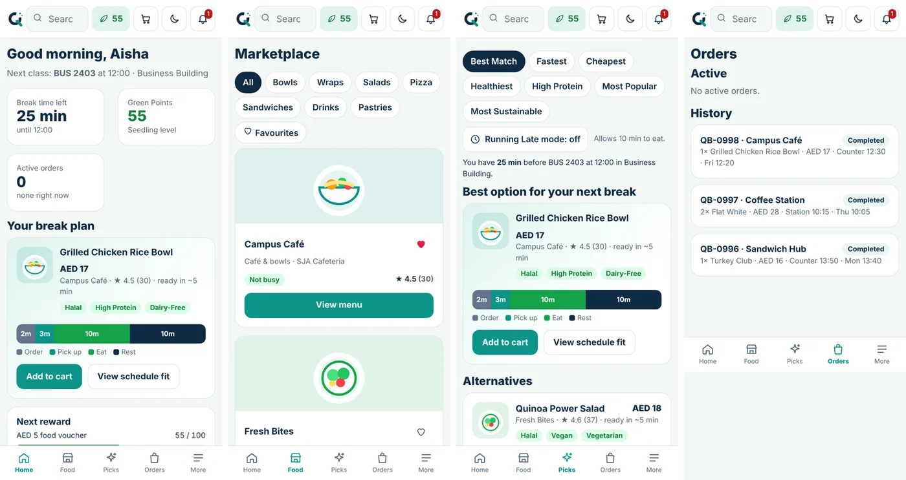
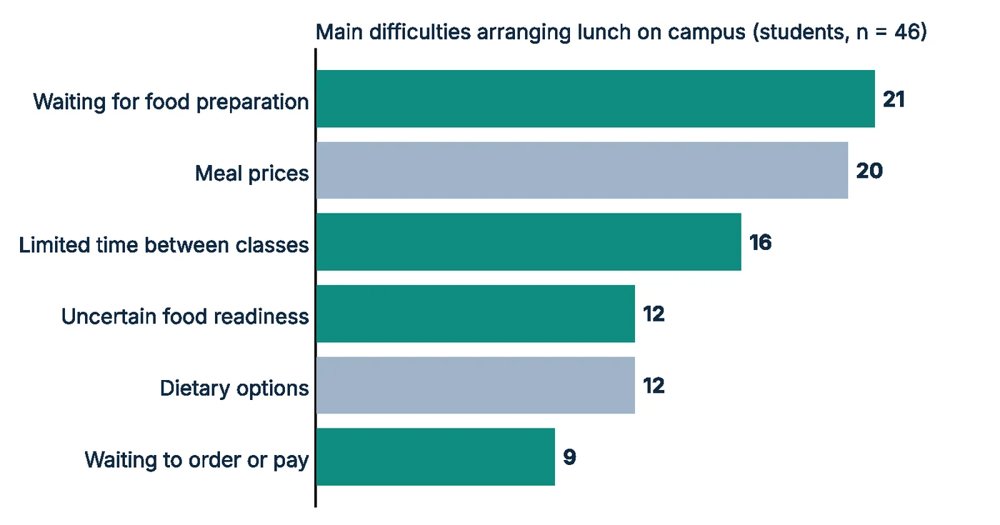
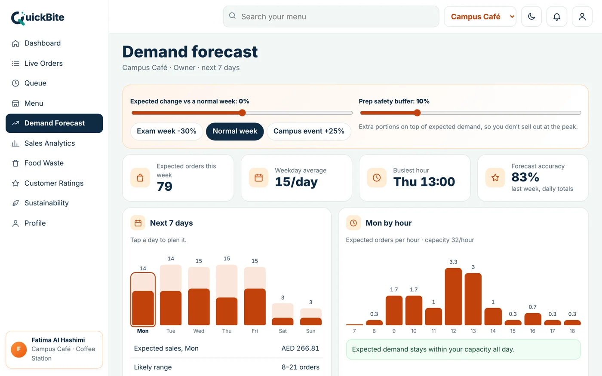
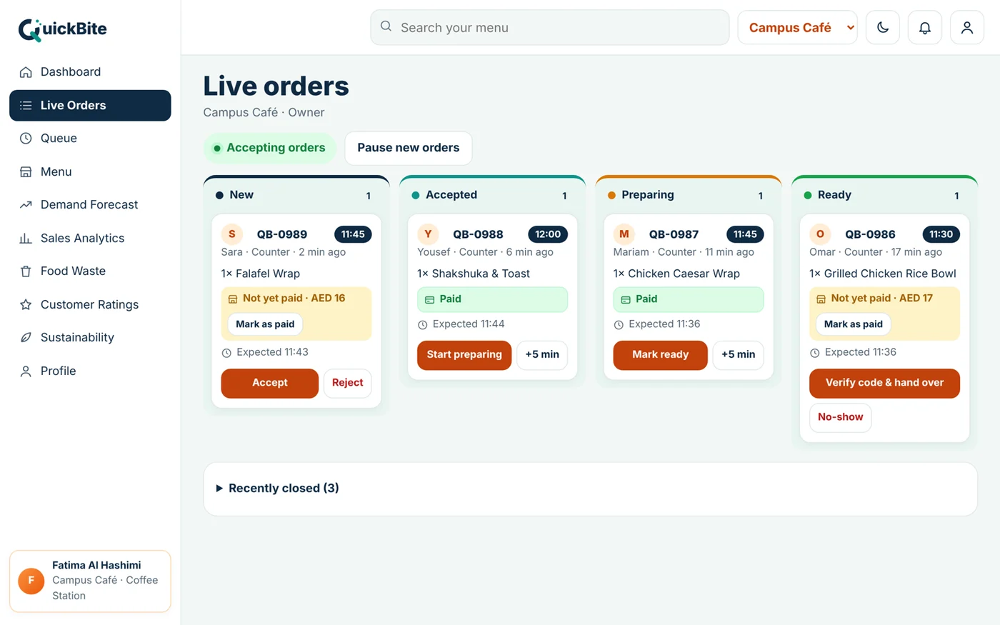

QuickBite
Pre-order your campus lunch. Collect it when your break starts. A campus food pre-order app with a restaurant dashboard for live orders, demand forecasts and food-waste tracking.

The problem
Breaks at HCT Sharjah are short, and the lunch queue eats most of them. We surveyed 46 students: 33 of them (71.7%) said they struggle to buy lunch in their break. The biggest reasons were waiting for food to be prepared, meal prices and too little time between classes.
It's a problem we live ourselves. Nobody knows what is ready, or when — so students queue, or skip lunch.

Who it's for
Our target customer is a student with a break of 30 minutes or less who is on campus at lunch three or more days a week. We validated the persona with the survey and five interviews.
Sources: Ministry of Higher Education via WAM (2026); HCT Open Data (2026); QuickBite survey.
The solution
Students order during class from their own cafeteria and collect the moment their break starts — at the menu price.
- Plan. A break plan built from the timetable, plus AI Picks for diet, allergies and budget.
- Order & pay. Choose a 15-minute pickup slot matched to the outlet's real capacity.
- Prepare. Outlets see live orders and a prep plan from the demand forecast.
- Collect. At the counter, a pickup station with a one-time code, or by runner between buildings (AED 3).
- After. Ratings, Green Points for reusable containers, weekly payouts to outlets.
- Measure. Outlets log food waste in kg against their own baseline.
The prototype
We built a working web prototype, not a mock-up: a student app and a restaurant dashboard. The forecast tells an outlet how many orders to expect each hour, so it prepares the right amount.
Feedback from the survey, interviews and the Week 7 Marketplace changed the plan: start with four outlets at one campus, and rename the product to QuickBite.


Why it wins
| QuickBite | Delivery apps | Queue / skip lunch | |
|---|---|---|---|
| Ready when your break starts | Yes — slots match timetable | No | No |
| Cost to the student | Menu price; AED 3 delivery | AED 5–9 delivery + service fees | Free, but costs time |
| Commission to outlet | 15% | 20–30% | — |
| On campus | Stations, QR lockers, outlet data | Off-campus delivery | — |
Delivery apps compared: talabat, Keeta, Careem, Deliveroo, noon, EatEasy. Sources: talabat (n.d.); Khaleej Times (2026); EatEasy (2026).
Business model
Revenue, 5-year plan (AED)
Source: QuickBite 5-year cash-flow model. Projections, not results.
What's next
The plan is a production app with real payments on iOS and Android from January 2027, a pilot at HCT Sharjah with pickup stations in the activity centres, and three HCT campuses live by September 2027.
Impact is measured inside the app itself: a target of 90% of orders ready on time, food waste in kg per day against each outlet's baseline, and the share of orders with a reusable box.